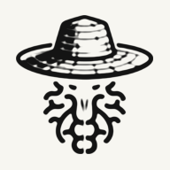

Puedes volver a esta pestaña varias veces en el día — no duplica, actualiza lo ya marcado. Cada casilla o valor se guarda solo, al momento de marcarlo/escribirlo — no hace falta presionar el botón de abajo (queda solo como respaldo por si algo falla).
Mientras la app esté abierta, te muestra una meta cada cierto tiempo, dentro del horario que definas. Marca Hecho cuando la cumplas: cada «Hecho» queda contado por día en el Sheet (hoja Registros_Diarios, filas «Recordatorio: …») y abajo ves tu cumplimiento frente a lo programado. Los ajustes de esta pantalla se guardan en este dispositivo.
Un registro por día, al despertar (unos 30 segundos). La fecha es la de la mañana en que despiertas. Si lo guardas otra vez el mismo día, actualiza el registro, no lo duplica.
Anótalos al despertar, antes de levantarte: se olvidan en minutos. La fecha es la de la mañana. Las pesadillas cuentan solas para los patrones.
Anota en texto libre lo que comes, con la hora. Sin contar calorías: lo que importa es que el análisis (con el prompt de abajo, en la IA que uses) vea qué comes y cuándo. Las estimaciones de una IA no son mediciones clínicas. Creatina y proteína en polvo: solo si tu médico lo recomienda.
Se calcula solo con las horas que anotas. Un día sin comidas anotadas queda en blanco, no se interpreta como ayuno.
Copia el prompt más tus registros del periodo (comida, sueño, energía, peso y ejercicio) y pégalo en la IA. Para saber si cubres los nutrientes, usa 7 días o 30 días: un solo día dice poco.
Benja, Sabri y Amor. Una fila por observación, no por día. Esto es para identificar patrones, no para reaccionar en caliente.
Control semanal de tu peso. Una fila por fecha — llena solo el peso, o también las medidas si tomaste circunferencias ese día.
8% grasa (definición competición): 86,5 kg magro / 7,5 kg grasa — abdomen marcado, difícil de sostener todo el año.
10% grasa (recomendado): 84,6 / 9,4 kg — abdomen visible, sostenible, estilo Toji.
12% grasa: 82,7 / 11,3 kg — definición buena, muy sostenible.
15% grasa: 79,9 / 14,1 kg — musculoso, ya no "magro".
Meta real: 94 kg totales con 10-12% grasa (no 94 kg de masa magra) ≈ 84-85 kg magro + 9-10 kg grasa esencial. Progresión estimada 18-30 meses. Reevaluar circunferencias cada 4 semanas.
Si por lo que sea no puedo hacer la rutina del día: 100 burpees (10 series × 10 repeticiones). Aumentar la progresión (más series, menos descanso, más velocidad) conforme el cuerpo se adapte — filosofía Cris Heria: nunca cero, siempre algo, sube la exigencia cuando ya no cueste.
Lunes = Empuje + Skill Handstand · Miércoles = Tracción + Skill Muscle-up · resto de días igual que antes. "Marca de hoy" queda como "última marca" la próxima vez que la edites, para ver tendencia.
8 series por sesión, 15–25 min. Termina cada serie con 1–2 repeticiones de reserva, sin llegar al fallo. Cuando hagas 20 repeticiones en todas las series unilaterales con recorrido completo, añade una mochila con carga moderada: cambia una variable a la vez. Si la prioridad del día son dominadas o flexiones, haz eso primero y las pantorrillas después. Mide la circunferencia cada 2–4 semanas en la pestaña Salud. Si aparece dolor en el Aquiles o en el dedo gordo, reduce el volumen. Mantén esta estructura cuatro semanas antes de cambiarla.
Cada prompt reemplaza {fecha} por la fecha de hoy en español al copiarlo — pégalo directo en la IA que uses.
Fecha y hora se capturan automáticamente al guardar. Las más recientes aparecen primero.
"No temo a la derrota, porque sé que la precisión estratégica prevalece sobre la fortuna a largo plazo."
¿Estrés agudo? Calma rápida: dos inspiraciones nasales seguidas (la segunda, corta) y una exhalación larga por la boca. Dos minutos bastan. ¿Para dormir o soltar el día? Yoga Nidra. ¿Entrenar la tolerancia al estrés a diario? Buteyko por la mañana.
Anota el nivel antes y, si practicaste una técnica, el nivel después. Con unas semanas de datos verás qué técnica te baja más el estrés y a qué horas se concentra.
El contenido del curso vive en NotebookLM (Dojo de Retórica StoicMensch). Aquí solo registras que practicaste, para ver avance y no perder el hilo entre sesiones.
Snippets de tu archivo maestro R, para consulta rápida sin tener que buscar en el documento completo.
Repaso rápido por materia. Agrega, edita o elimina según avances en la carrera.
Si haces un registro de prueba y quieres borrarlo: elimínalo primero en el Sheet, luego usa este botón para que este dispositivo olvide su copia local.
Comprueba si este dispositivo tiene la app guardada para abrirla sin señal. Hazlo con señal; si algo sale ✘, el texto dice qué falta.
Transcribe tu voz a texto dentro del teléfono, sin internet y sin enviar el audio a ningún sitio (modelo Whisper «base»). Antes de ofrecértelo, la app evalúa si tu teléfono puede con él; si no puede, no se activa y la app sigue igual de ligera.
Versión de la app:
Corrige lo que necesites.